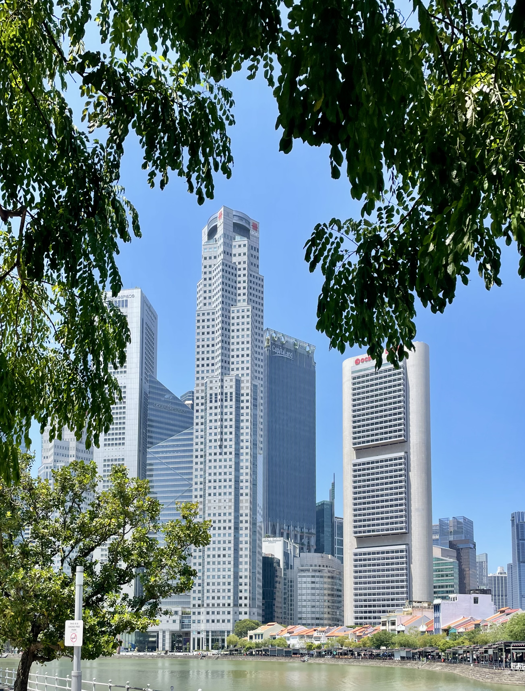

The Experience
Our Singapore
Singapore is different for us because it isn't simply somewhere we have travelled to. It is home.
Since moving to Singapore, we have discovered a side of the city that goes far beyond its famous skyline. Tropical greenery is everywhere, wildlife appears in the most unexpected places and the waterfront becomes part of everyday life.
What we love most is the contrast. One moment we're surrounded by skyscrapers and the energy of the city, and the next we're watching monitor lizards by the water, discovering a snake in the trees or picking bananas that have grown in our own garden.
These are the moments that have made Singapore feel like home to us.
